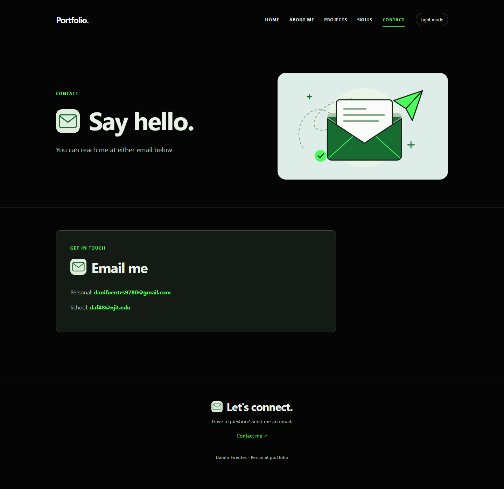
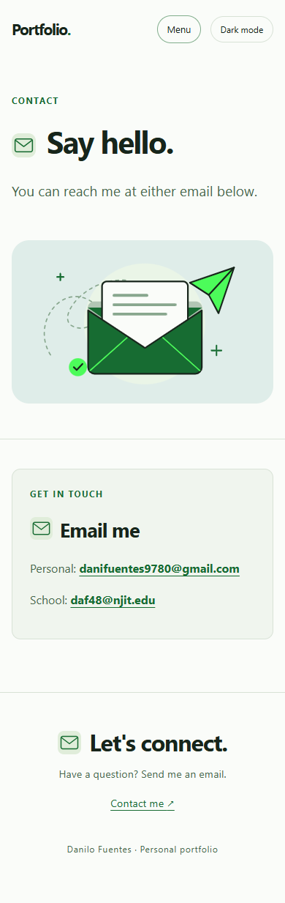

My portfolio has five pages: Home, About Me, Projects, Skills and Contact. It introduces me and shares my NJIT education and interests. Projects shows my Onshape scooter design, major slideshow, and psychology project about memorable slogans and jingles, each with a screenshot and description. Skills lists my Python experience, and Contact has my personal and school email links.
The site uses plain HTML, CSS and JavaScript. On smaller screens, the content stacks and the navigation changes to a Menu button. Visitors can switch between light and dark mode, and the site remembers their choice when browser storage is available. I also included visible keyboard focus, a skip-to-content link and a loading animation that respects reduced-motion settings.
One challenge was making the writing sound like me. Some of the first descriptions were too generic, so I gave Codex examples from other sections and asked for simpler wording. Another challenge was fitting different screenshots into matching project cards. The fix was to use the same preview area for each image and contain the full screenshot inside it without stretching or cropping.
Accessibility testing also found that the Home page jumped from an h1 heading to h3 headings. Codex changed the card headings to h2 and updated their CSS. After publishing the fix, Home's Lighthouse Accessibility score went from 98 to 100. All five pages have recorded scores of 100/100.
When I asked Codex to add the NJIT logo to my education card, it made the logo too big and added a white box behind it. I pointed out both problems and asked for a smaller, transparent version. The SVG was already transparent, so Codex removed the white background and reduced the logo to 160 pixels wide. I checked the result and continued adjusting it until it fit the card.
Changes were committed and pushed to GitHub throughout development. TESTING.md records 54 live-site test cases covering navigation, responsive layouts, keyboard controls, JavaScript and accessibility. The screenshots use browser-emulated screen sizes rather than physical devices. Codex assisted with code and revisions; I supplied the personal content and project screenshots.
These screenshots show the same page at two browser viewport sizes. On the laptop-sized screen, the illustration sits beside the introduction. On the phone-sized screen, the content stacks into one column and the navigation becomes a Menu button.


Captured from https://0danilo.github.io/portfolio/contact.html during live-site testing. Screenshots of all five pages at both sizes are included with the test evidence in the repository.